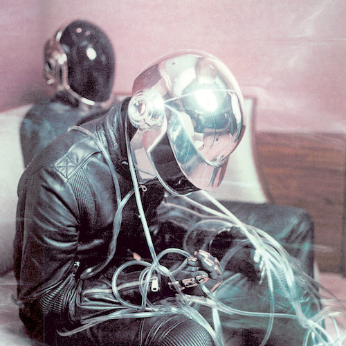
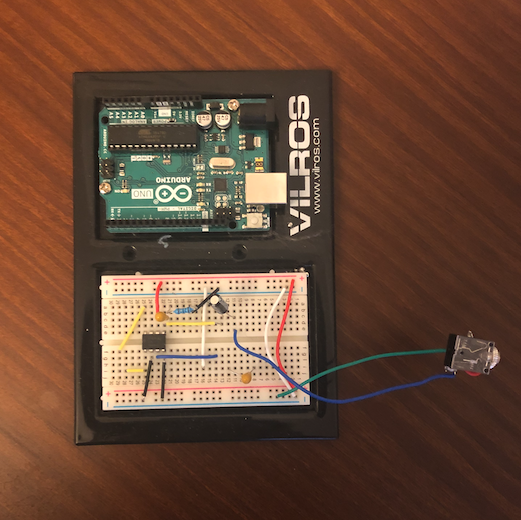
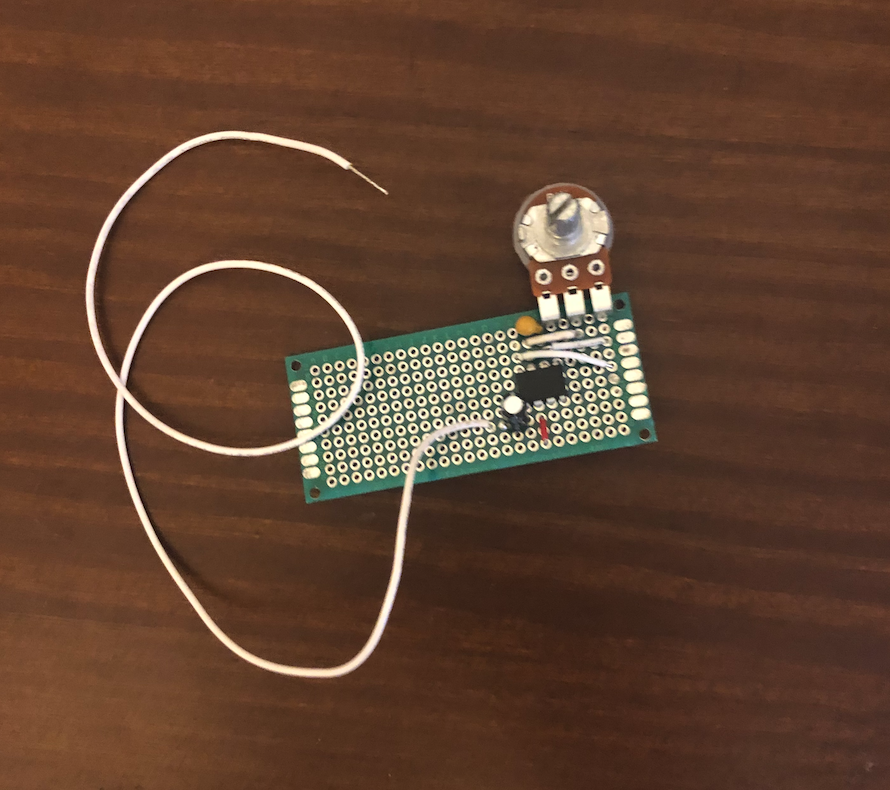
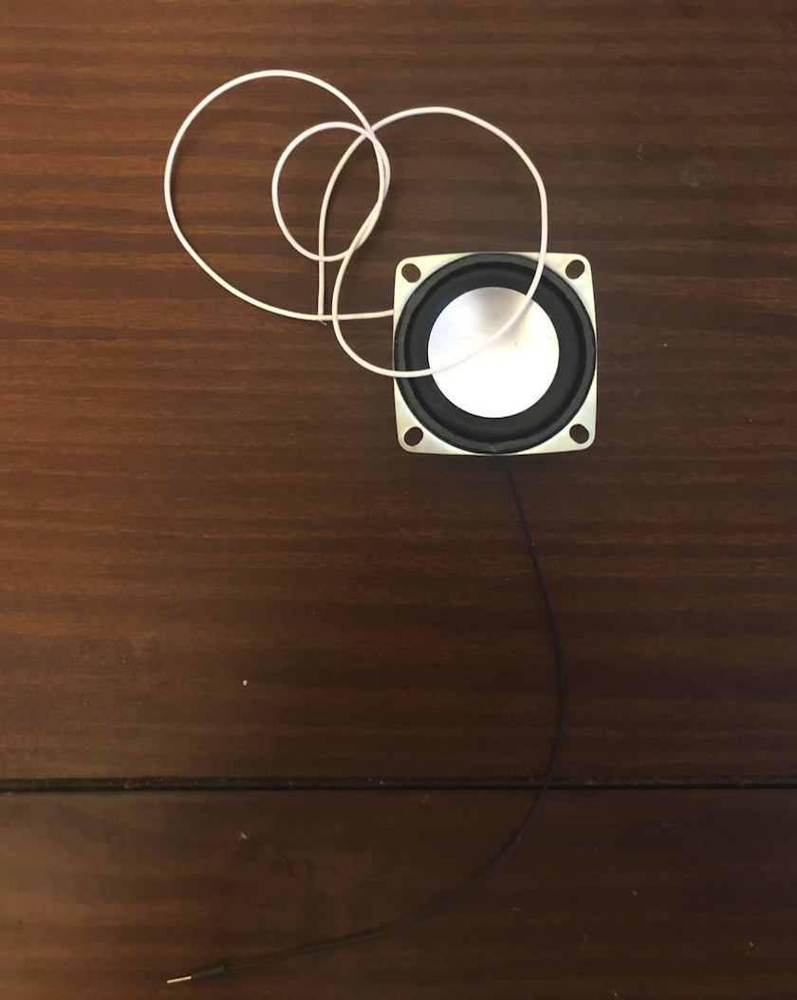
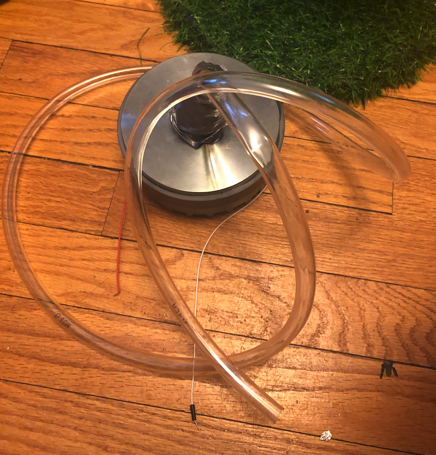

Talking Hands by Aldo Aguilar
Inspiration
Talking Hands is the dream-sound-child of "rustic" augmented reality and 70's talk box technology. Ever since I heard Daft Punk's Discovery album I knew that I needed to get a piece of that technology in my mouth. Fast forward ~11 years and here I have the opportunity to build any instrument my imagination deemed necessary. I knew I needed to do something not only to satisfy this decade-old talkbox itch but also my new craving for unnecessary machine learning. This thing wasn’t going to come to fruition without some cheesy title that would make me giggle every time I heard it; thus the punny name “Talking Hands” emerged. Now my initial ideas about how to interface with a talk box using your hands had a lot of sensors, motion, and other ideas using electronics. However, I thought that it would be more accessible to write something that anyone with a webcam could interface with. I really enjoy machine learning, and computer vision is something I hadn’t built on-top of enough. Now we have a talkbox fully controlled using your webcam, no guitars needed.

What is Talking Hands?
Simply put, Talking Hands is a talkbox I built that you control using your hands. A talkbox is an instrument that lets you play sounds through your mouth, and using your mouth you can sing through these sounds. The result sounds like robotic singing.

How was Talking Hands made?
The best way I can break this up is to split the instrument into two components: the talk box and the hand tracking software.
The Talk Box
The talkbox takes a signal from an audio device, amplifies it, and outputs it through a compression driver. I built the amp here following this guide, but I didn’t have the right components so this was just a starting point. Here’s what the amp looks like:

After I got the amp working I soldered my components onto some pcb:

It took me a while to figure out how to build the talk box, I was trying to use an arduino to send audio for a long time but this didn’t work. I found that using the amp was much more efficient.
Originally I was using some little speakers for my talk box:

These speakers worked great for getting some sound to play. Part of the issue is that these speakers are fairly quiet. I wrapped these speakers up in a duct tape container and tried to send sound out of a tube, no luck. I did some research and found that everyone in talkbox building uses a compression driver. A few days later I was ready to go deaf because this thing was LOUD. I managed to get it working but I was still losing too much sound to really get a good talkbox effect. My solution was to attach my tubing using tubing. I cut small sections of tubing to help make a good seal with the compression drive. I did have to wrap all this in duct tape to keep it from unraveling, and for the aesthetic. Now I had a working talk box:

Hand Tracking
Lots of solutions for hand tracking exist online. There are even pieces of hardware which will handle the software for you! However, I thought it would be a fun process to code up my own solution. So I found [Media Pipe] (https://google.github.io/mediapipe/), which is an open source solution for computer vision tasks. It didn’t take me too long to have my hands displayed on screen from my webcam. This is where my project experienced the most iterations, let me outline my experience working with hand tracking.
Using Regions To Control Notes
This was my first approach for controlling notes, I just made a grid on screen and based on where your hand was the program would output a different value. This worked really well, and it was really accurate. Something about it didn’t feel great though; you couldn’t smoothly transition between notes which was important.
Using Gestures
This was the most natural way to interact via hand tracking. However, I was slightly intimidated by this approach and had some hesitation before trying this out. The first thing I tried out was using my right hand to change notes. This followed a simple pattern: you just touch your index finger to your thumb, this could be C. Next if you want to play B you can touch the index middle finger and thumb. This works for each finger. My only issue was I could only play 4 notes. I thought about using the screen regions with your left hand as a modifier for notes you played. I ended up not really liking this, something about it didn’t feel right. The next idea I tried was using a waving gesture to change what notes you played with your right hand. After a lot of debugging, I was able to calculate the speed at which your hand moves, and using that I could determine what position of the scale you were in (how the left hand modified the right). This gesture felt so bad to play on, you had to constantly wave your hand back and forth at the exact same speed. And since speed was normalized it was extremely sensitive (little to no control). The other issues about calculating speed was when a hand went off-screen, detecting another hand, or randomly blowing up to a giant value. I realized through this process that designing a general gesture mechanism would be really difficult, I needed to focus on something that made sense to me. My solution not only worked out well, it also really emphasized that Talking Hands title.
Using Good Gestures
My right hand gesture stayed the same as before, for example in C:
Index touches thumb -> C
Middle touches thumb -> B
Ring touches thumb -> D
Pinky touches thumb -> E
But now I have separate positions for my left hand:
No fingers touch thumb -> Position L0
Index touches thumb -> Position L1
Middle touches thumb -> Position L2
Ring touches thumb -> Position L3
Pinky touches thumb -> Position L4
This allowed me to modify the right hand. Here’s an idea of how this works:
L0 & Index touches thumb -> C
L0 & Middle touches thumb -> B
L0 & Ring touches thumb -> D
L0 & Pinky touches thumb -> E
L1 & Index touches thumb -> F
L1 & Middle touches thumb -> G
L1 & Ring touches thumb -> C
L1 & Pinky touches thumb -> B
.
.
.
I decided that I would also make it so that if all fingers of the left hand were touching the thumb the key would shift. You can pre program progressions you want to play over, but by default you’ll cycle over the circle of 4ths.
Cleaning Things Up
After implementing gestures I fixed all the bugs that came with my gestures:
- Right vs Left: I split the screen in half so that if a hand is to the right of the middle it acts as the right hand, and if a hand is to the left it acts as the left hand.
- Sensitivity: Dealing with real world distances can be a pain. The current build of my hand tracking software works best when your hands are ~2 feet away from your camera. I enjoy the distances that I set and found them to not be too sensitive. But at first if you breathed wrong you would play 100 notes and switch keys rapidly
Max Patch
My max patch is fairly basic, it reads in data from my hand tracking software using UDP, and will play notes and switch keys based on input from the script. Currently you can choose to play major scales, pentatonic scales, and the aeolian mode of major.